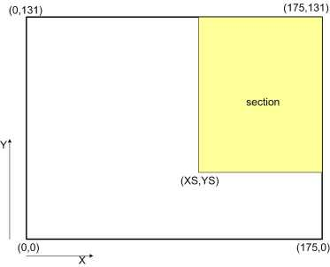
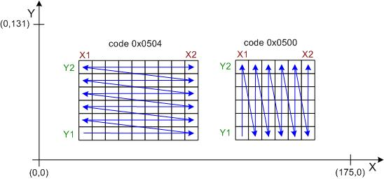
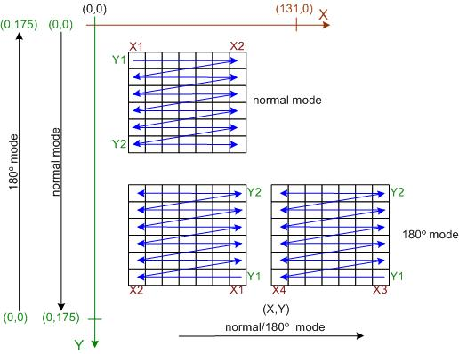

Programming the S65 Displays
Programming the S65 Displays
by Christian Kranz, October 2005Updated: December 7, 2005
Programming the S65 Displays
A LCD TFT display is programmed in three steps. To switch on the display a initialization sequence is needed to program the power chip of the display. That is needed because of the high multiplex rate of the display a relative high voltage is used for driving the glass. The glass voltage can be in the 10V to 20V range and is usually generated by charge pumps.
After switching on the power usually the display parameter are programmed. In some cases also the boost circuit has to be reprogrammed from startup to active.
After startup the display can be used for displaying...
The originally measured seven initialization sequences from the S65 display can luckily be reduced to three sequences. In addition we do not need the very long time intervals Siemens used in here approach. The first (of the three) used initialization sequence is:
INIT1: Display Software ResetIt looks like this sequence starts the display controller. After a certain time (min 50ms) the second init command sequence is transmitted to the display.
INIT2:
After that we need to wait for the display internal voltage settling. This wait time is very sensitive. If the time is too short or too long the display will not work! It was measured to be 7ms and this value shall also be used to drive the display with the sequences shown here.
The third sequence follows directly and is:
For a stable initialization we need a break of about 50ms (time might be shortened) before sending the fourth init sequence to the display.
INIT4:After this initialization sequence the display is ready to use. An immediate clear screen is recommended because the display shows random content after first power on.
For a regular shutdown a display needs normally a power down sequence to discharge the glass voltage in a controlled manner. Otherwise the lifetime of the display might be reduced. Currently the power down sequence is not known. Therefore we only have the possibility to reset the display and switch off the power supply.
After the initialization the display is ready to use. Usually the first thing to do is to clear the display. That can be perfectly done with the following memory write command.
After this command the display data can be written pixel by pixel, each pixel 16-bit.

The parameter XS and YS are defining subsections of the display memory. It is not required to write the complete memory. If only a part of the display should be written the data write can be stoppend and the next MEMWR command resets the write pointer to the given coordinates.
The complete screen is written with XS=0 and YS=0. In that case it is not required to repeat the command for each screen write. It is sufficient to write simple the data again and again. The display memory is organized according the picture on the right side. The total number of bytes is 132x176x2, that means in total 0xB580 pixel. The memory is written first in X direction and second in Y-direction. The parameter OR defines the display orientation. OR=0x04 sets the 0 degree orientation shown in the figure on the right. OR=0x00 defines the 90 degree orientation. For details see the section partial screen write. With OR=0x04 the memory is written in x-direction, that means line by line in x-direction from left (low x-number) to right (high x-number). With OR=0x00 the display memory is written in y-direction, that means from column by column from YS to 131.
The display memory is initialized to work according the -5-6-5- color coding (-R-G-B-) scheme. That means the first (MSB first) 5-bits are coding the intensity of red, the following 6-bits are coding the intensity of green and the last 5-bits the intensity of blue. (0xFFFF is white, 0x0000 is black)
The display memory is organized in a matrix form with x- and y coordinates. At each matrix coordinate one 16-bit color value (pixel) is stored. (Advanced techniques like PET (sub-pixel addressing) seems not to be supported.) The following picture shows the principle:
0 degree Rotation

For partial writing to the memory the commands below are used. The start corner (X1,Y1) and the end corner (X2,Y2) have to be defined. X2 has to be larger or equal X1, Y2 has to be larger or equal Y1.
For advanced addressing modes of the display controller see advanced addressing modes.
Description of init sequence not ready yet. Please look at the example code.
Power Down:Description of init sequence not ready yet. Please look at the example code.
Currently two different drawing modes are known. The normal mode and 180degree rotated mode. The grafik modes are programmed using the parameter of the DATCTL command.
| DATCTL | 7 | 6 | 5 | 4 | 3 | 2 | 1 | 0 |
|---|---|---|---|---|---|---|---|---|
| parameter | x | * | 1 | * | C2 | * | C1 | G |
Not all parameter bit combinations are known today. The next table shows the meaning of known bits.
| Bit | Description |
|---|---|
| x | no influence |
| * | if set memory not written |
| C2 C1 | 00: not working |
| 01: different color coding | |
| 10: not working | |
| 11: 5-6-5 RGB color coding | |
| G | 0: normal mode |
| 1: 180 deg. mode |
Writing in the different grafik modes is shown in the following figure. In normal mode the (0,0) point is in the left upper corner. The (X,Y) coordinates for the SD_CSET and SD_PSET commands are given in natural order. (X1,Y1) is the upper left corner, (X2,Y2) is the lower right corner.
In 180 degree mode things are a little bit more confusing. The y-axis changes the direction, but x-axis not. In addition, if a rectangular area is drawn, (X1,Y1) is now the lower right corner of the rectangle and (X2,Y2) is the upper left corner, but still X1 has to be lower than X2 and Y1 has to be lower than Y2. That means if e.g. X1=0 and X2=15 the rectangular is drawn from starting at x=15 with the first bit. Then it is drawn down to x=0 ending with the 16'th bit.
Drawing modes Epson L2F50 Display
